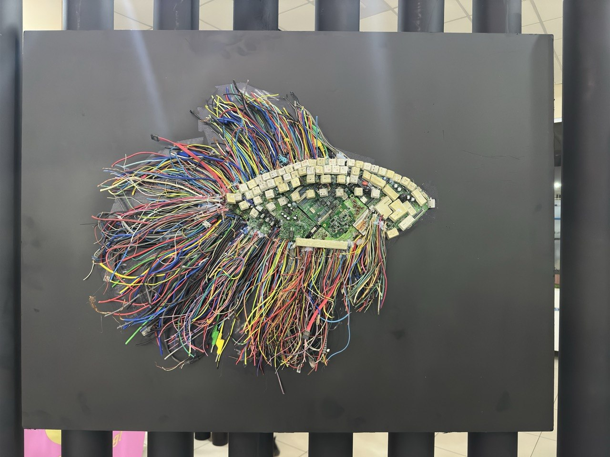

Art Engineering · Season 2
Silicon
Tide

The ocean we will have is already in our pockets. Fish will adapt to it the way they always have — by becoming it. This one is made from thirty metres of telephone wire and the keyboards of sixteen computers retired from our own labs.
Nothing here was thrown away. The wires were sorted by colour. The circuit board is the spine. The keys are the scales, pressed one by one, each by a hand that once typed a thesis.
· · ·
- Materials
- CAT-5 cabling, motherboard, keyboard key caps, acrylic paint
- Sourced from
- KIUT IT department, end-of-life equipment, 2025
- Process
- Sorted, stripped, re-bundled, and hot-glued over a shaped wire armature
- Species
- After the Siberian sturgeon
- Edition
- One of one
Also in this exhibition

Stay in touch —
Shota Rustaveli St., 156, 100121 Tashkent · Spring 2026